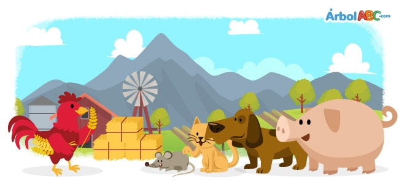

Little Red Hen

Once upon a time there was a red hen that found a grain of wheat.
“Who will plant this grain?” she asked.
“Not me,” said the dog.
“Not me,” said the cat.
“Not me,” said the pig.
“Not me,” said the mouse.
“Then I will,” said the little red hen. Cluck, cluck!
She planted the grain of wheat and it grew very tall.
“Who will cut this wheat?” asked the little red hen
“Not me,” said the dog.
“Not me,” said the cat.
“Not me,” said the pig.
“Not me,” said the mouse.
“Then I will,” said the little red hen. Cluck, cluck!
The little red hen cut the wheat.
“Who will take the wheat to the mill to make the flour?” asked the little red hen.
“Not me,” said the dog.
“Not me,” said the cat.
“Not me,” said the pig.
“Not me,” said the mouse.
“Then I will,” said the little red hen. Cluck, cluck!
She took the wheat to the mill and later returned with the flour.
“Who will knead this flour?” asked the little red hen.
“Not me,” said the dog.
“Not me,” said the cat.
“Not me,” said the pig.
“Not me,” said the mouse.
“Then I will,” said the little red hen. Cluck, cluck!
The hen kneaded the flour and then baked the bread.
“Who will eat this bread” asked the little red hen.
“I will,” said the dog.
“I will,” said the cat.
“I will,” said the pig.
“I will,” said the mouse.
“No,” said the little red hen. “I will eat it myself!” Cluck, cluck!
And she ate all the bread.
Moral: Do not count you chickens before they are hatched.
Gallinita roja
Había una vez una gallina roja que encontró un grano de trigo.
"¿Quién plantará este grano?" ella preguntó.
"No soy yo", dijo el perro.
"No soy yo", dijo el gato.
"No soy yo", dijo el cerdo.
"No soy yo", dijo el mouse.
"Entonces lo haré", dijo la gallinita roja. ¡Cluck, cluck!
Ella plantó el grano de trigo y creció muy alto.
"¿Quién cortará este trigo?" preguntó la gallinita roja
"No soy yo", dijo el perro.
"No soy yo", dijo el gato.
"No soy yo", dijo el cerdo.
"No soy yo", dijo el mouse.
"Entonces lo haré", dijo la gallinita roja. ¡Cluck, cluck!
La gallinita roja cortó el trigo.
"¿Quién llevará el trigo al molino para hacer la harina?" preguntó la gallinita roja.
"No soy yo", dijo el perro.
"No soy yo", dijo el gato.
"No soy yo", dijo el cerdo.
"No soy yo", dijo el mouse.
"Entonces lo haré", dijo la gallinita roja. ¡Cluck, cluck!
Llevó el trigo al molino y luego regresó con la harina.
"¿Quién amasa esta harina?" preguntó la gallinita roja.
"No soy yo", dijo el perro.
"No soy yo", dijo el gato.
"No soy yo", dijo el cerdo.
"No soy yo", dijo el mouse.
"Entonces lo haré", dijo la gallinita roja. ¡Cluck, cluck!
La gallina amasó la harina y luego horneó el pan.
"¿Quién comerá este pan?", preguntó la gallinita roja.
"Lo haré", dijo el perro.
"Lo haré", dijo el gato.
"Lo haré", dijo el cerdo.
"Lo haré", dijo el ratón.
"No", dijo la gallinita roja. "¡Lo comeré yo mismo!" ¡Cluck, cluck!
Y ella se comió todo el pan.
Moral: Do not count you chickens before they are hatched.